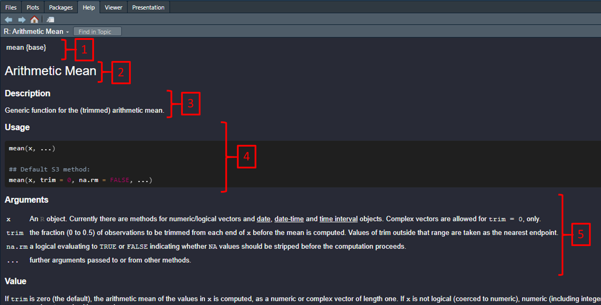

## HEADER ####
## Who: <YOUR NAME>
## What: R language basics
## Last edited: <DATE TODAY in yyyy-mm-dd format)
####1. Overview
For this section of tutorials we will work on the ‘syntax’, or programming language, of R. You are not expected to be bilingual in this language but just become familiar with the basics, and know where to look for help if needed.
On this page, you will find:
Example script, comments, help, pseudocode
R as a ‘calculator’
TRUE or FALSE
Regarding “base
R” and the TidyversePractice exercises
2. Script Set-up
The most important thing to keep in mind right at the beginning of learning R is to view the script as something you are writing to document a piece of work (e.g. progress in a workshop like this, an analysis, a research project, etc.). Organizing every script you write is extremely important to build “good habits” for reproducibility of your work.
Following on from the previous section, (‘Getting Started’), for each of these sections we are going to set up our script following a consistent format. Use the code below to create a template script that you can use throughout the tutorials, module and any other instances you use R!
To go over this again, firstly we will have our HEADER section:
Next we will include a CONTENTS section. This example includes subheadings for the following page. You might want to create a blank template also.
## CONTENTS ####
## 2 Help!
## 3 R as a 'calculator'
## 4 TRUE or FALSE
## 5 Regarding base R and the Tidyverse
## 6 Practice exercises After our CONTENTS we’ll start our first CODE CHUNK to kick off the first section. Remember - two #’s to start, 4 #’s to finish:
## 2 Help! ####3. Help!
3.1 Help function
One of the great things about using R is the community and the spirit of helping others. However, there are so many websites, books, blogs and other resources that it can be overwhelming. Best practice is to learn to use the R Help system first, then seek help elsewhere.
The basic way to access the built-in help in R, is to use the help() function, with the name of tool you need help using inside the brackets. You may also use ? as a shortcut for help, used before the function.
For example, to calculate the mean of some numbers, we would use the function mean(), and to display the help for the mean() function we would run either help(mean) or ?mean. Let’s stick to one for now. Run the following code in your own script:
# Display help page for the function mean
help(mean)Let’s have a look at the information that is here because the help pages are essential to understand and every help page on every subject is organised in exactly the same way (and we will practice a lot using them).

1 Function name {Package name} This field let’s you know what “R package” the function belongs to. We can ignore this for now, but it can be very useful.
2 Short description This tells you in a few words what the function does.
3 (longer) description This gives a longer description of what the function does
4 Usage This usually gives an example of the function in use and lists the “arguments” that you are required to supply to the function for it to work on. Of course, you need to know about the arguments...
5 Argument definitions This field tells you what the argument are and do!
Using the Usage and Argument fields, we can figure out how to make the function do the work we want.
# Under Usage:
# mean(x, ...)
# The "x" is an argument that is required
# The "..." means there are other optional arguments
# Under Arguments:
# x
# An R object... for numeric/logical vectors ...
# try this code in your own script
my_length <- c(101, 122, 97) # 3 numerical measures
mean(x = my_length) 3.2 Organising code
Breaking up a big task into a series of smaller tasks is commonly referred to as PSEUDOCODE or mini code chunks. An example of a task might be ANALYSE YOUR DATA (in shouty capitals because it is a big task). To accomplish this task, we might have to walk through a series of steps, e.g.,
-Read data into R
-Test assumption for statistical testing
-Graph the data
-Perform statistical test
-Organize outputs to communicate in report
It is often a good idea to break down a task into pseudocode both to organise and document the methods in a logical way, but also to conceptually simplify a problem that is difficult to solve. Practically, the items in a typical table of contents in an R script might be similar to pseudocode.
NB: This technique can extend well to any problem, not just R code and programming!
4. R as a ‘calculator’
4.1 Basic Arithmetic
Basic manipulation of numbers in R is very easy to do and is so intuitive that you can probably guess what to do and how to do it. There are just a few specifics that we will practice. This list is not exhaustive; the goal is to get enough to begin practicing.
Try the following in your practice script:
# Add with "+"
2 + 5
# Subtract with "-"
10 - 15
# Multiply with "*"
6 * 4.2
# Divide by "/"
10 / 4
# raise to the power of x
2^3
9^(1/2) # same as sqrt()!
# There are a few others, but these are the basicsIt should deliver the following:
# Add with "+"
2 + 5[1] 7# Subtract with "-"
10 - 15[1] -5# Multiply with "*"
6 * 4.2[1] 25.2# Divide by "/"
10 / 4[1] 2.5# raise to the power of x
2^3 [1] 89^(1/2) # same as sqrt()![1] 3# There are a few others, but these are the basics4.2 Order of Operation
Remember BODMAS?
B-Brackets, O-Orders (powers/indices or roots), D-Division, M-Multiplication, A-Addition, S-Subtraction
This principle, or the ‘order of operation’, refers to the order in which mathematical calculations are carried out. A phrase like 2 + 2 is simple, but we need to consider order for more complicated phrases like 2 + 2 * 8 - 6. In general multiplication and division are carried out before addition and subtraction unless specific order is coded. Run this in your example script:
# No order control
4 + 2 * 3
# Order control - same
4 + (2 * 3)
# Order control - different...
(4 + 2) * 3Please note: In most cases, the use of spaces does not matter in the R language. Which one of the following ways of writing math operation might be easier to document and read?
# Try this
6+10 # no spaces
7 -5 # uneven spaces
1.6 / 2.3 # large spaces
16 * 3 # exactly 1 space
# exactly 1 space is probably easiest to read...Your output should look like this:
6+10 # no spaces[1] 167 -5 # uneven spaces[1] 21.6 / 2.3 # large spaces[1] 0.695652216 * 3 # exactly 1 space[1] 485. TRUE or FALSE
Expression that output TRUE (treated as 1 in most computing systems including R) versus FALSE (treated as 0), are referred to as logical ‘Boolean’ operators. A typical expression might be something like asking if 5 > 3, which is TRUE. More sophisticated phrases are possible, and sometimes useful.
For example, try this in your example script:
# simplest example
3 > 5
# 3 is compared to each element
3 < c(1, 2, 3, 4, 5, 6)
# Logic and math
# & (ampersand) means "and"
# | (pipe) means "or"
# This asks if both phrases are true (true AND true)
# notice "TRUE" has a special meaning in R
TRUE & TRUE # both phrases are the same and true, TRUE
3 > 1 & 1 < 5 # both phrases are true
# Are these phrases true?
TRUE & FALSE # are both true?
FALSE & FALSE # are both true?5.1 Selecting Data
These Boolean expressions are often used to select groups of data, for example asking whether values in a column of variables are greater than some threshold. This may be used as an alternative to creating different versions of a particular dataset.
Try this in your example script:
# Put some data into a variable and then print the variable
# Note "<-" is the ASSIGNMENT syntax in R, which puts the value on the left "into" x
x <- c(21, 3, 5, 6, 22)
x
x > 20
# the square brackets act as the index for the data vector, i.e., everything that applies to the written expression
x[x > 20]To achieve the opposite of this, i.e. NOT selecting data that fits your expression, you can use the ! operator. In some instances this may be a simpler option.
Try this in your example script:
TRUE # plain true
!FALSE # not false is true!
6 < 5 #definitely false
!(6 < 5) #not false...
!(c(23, 44, 16, 51, 12) > 50) 6. ‘Base R’ vs. the ‘Tidyverse’
Base R and the tidyverse are two distinct ecosystems within the R programming language for data manipulation, visualization, and analysis. Base R refers to the core set of packages and functionalities that come pre-installed with R, providing a fundamental suite of tools for data analysis and statistics. On the other hand, the tidyverse is a collection of add-on packages designed to enhance and simplify data science tasks in R.
While base R and the tidyverse can be used to accomplish similar tasks, they often employ different syntax and methodologies, with the tidyverse being particularly well-suited for handling and analyzing tidy data.
The Tidyverse is extremely powerful and we love it. However, we feel that it is far more efficient to first learn base R for non-programmers, before learning the Tidyverse, and we will exclusively use base R for this general introduction.
There is some disagreement over which “version” of R is better or easier to learn and teach with. You will definitely encounter the Tidyverse at some point and eventually you can choose how much or how little you will use it.
7. Exercises
Name and describe the purpose of the first 2 sections that should be present in every
RscriptWhat is the purpose of “subset” argument in the
boxplot()function (hint: usehelp())Write an expression using good R spacing syntax that takes the sum of 3, 6, and 12 and divides it by 25
Write pseudocode steps for calculating the volume of a cylinder (hint, if you do not know it by heart, you may need to research the equation for the volume of a cylinder!). For a cylinder of height = 3.2 cm and end radius of 5.5 cm, report the volume in cm to 2 decimal points of accuracy. Use at least 3 decimal points of accuracy for
pi(hint, the quantity namedpiis a standard variable inR!).Execute the following code and explain the outcome in comments:
TRUE & 3 < 5 & 6 > 2 & !FALSE